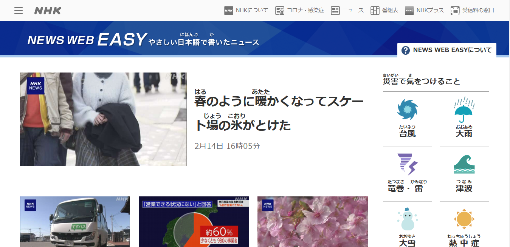
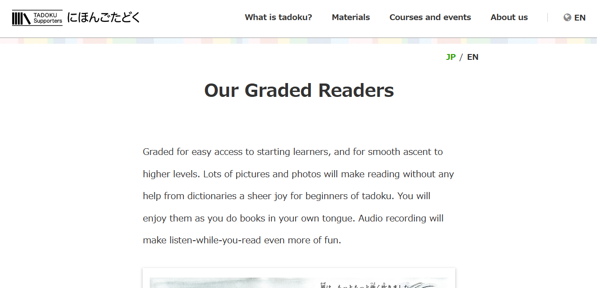

Websites To Practice Reading Japanese:
Why Read Japanese?
It's crucial to read japanese so you can recognize the characters at an instance. Taking that into account, many reader struggle with finding the right resources. Well fear not, I am here to help with just that. Here you will all the resources you need to get started and reach a decent level in your reading. I hope you get something valuable from this website.
Enjoy your journey~
NHK News Easy
Summary:
This is a really good website to Practice reading Japanese. Although it's mostly N4 to N3 I will recommend it to anyoone who can read N4 kanji. It also has a feature to listen. You can listen while reading as well, two birds with one stone.
Click Me to check the Website

Tadoku
Summary:
This website is another great one.The title Tadoku basically means to read without paying attention to the meaning. So what you have to do is read quickly and use context do wonders for you. There are all sort of difficulty available in this website ranging from N5 all the way to N1. Some are free with few paid as well but I assure you it's worth to invest in.
Click Me to check the Website
